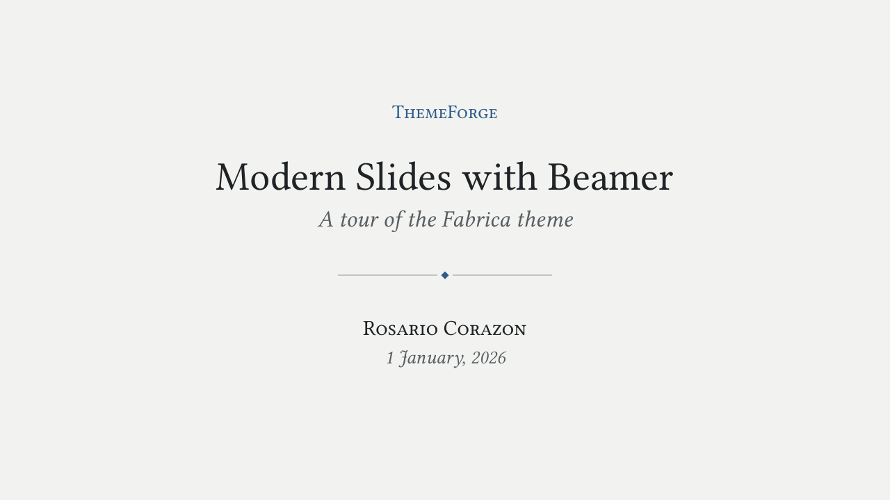
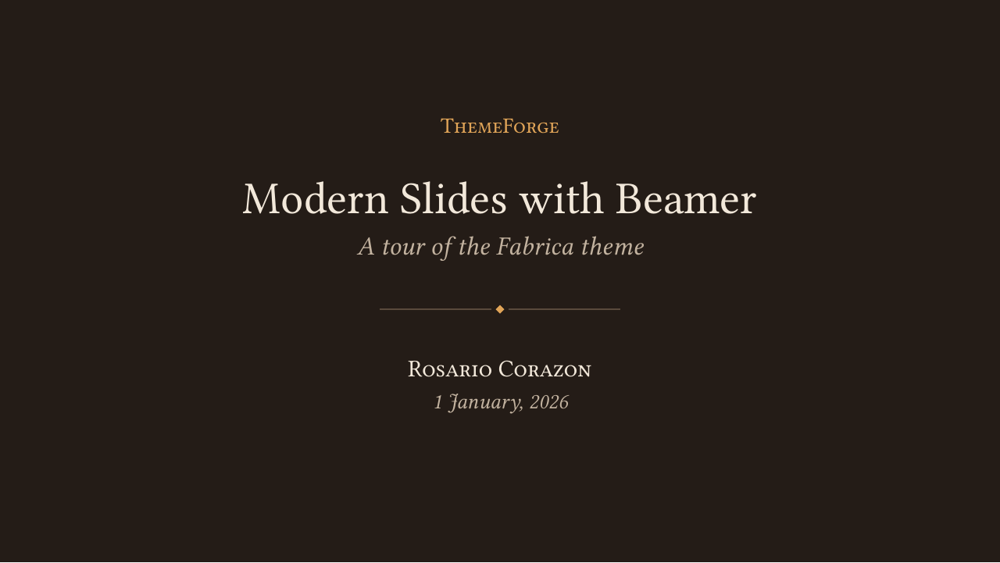

Meridian
Light and minimal: lots of whitespace, one accent colour.


Modern themes for LaTeX Beamer. Free, open source, LPPL licensed.
Light and minimal: lots of whitespace, one accent colour.
Editorial and academic: Serif-based and elegant.



More themes posted as they are ready...
\documentclass[aspectratio=169]{beamer}
\usetheme[variant=horizon]{Meridian}